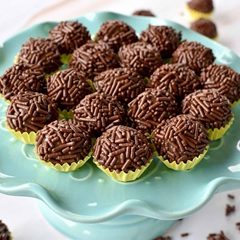

Uma receita clássica da frota estelar, agora revelada! Com as ferramentas do HTML, vamos documentar esta guloseima interplanetária. Prepare-se para uma missão de sabor!
Relatório da Missão: Ingredientes Cósmicos 📜

1 Lata de Leite Condensado de Andrômeda
1 colher (sopa) de Manteiga de Asteroide (sem sal)
2 colheres (sopa)3 colheres (sopa) de pó de buraco negro (Chocolate em Pó) Poeira de Estrela Cadente (Chocolate Granulado) para a cobertura final
Procedimento de Lançamento: Modo de Preparo 🚀
Passo 1: A Ignição da Nebulosa
Em uma panela (sua nave espacial), misture o leite condensado, a manteiga e o chocolate em pó. É crucial mexer
bem antes de ligar o motor (o fogo).
Despeje a massa em um prato untado e espere esfriar. Após o pouso seguro, unte as mãos e modele pequenos
planetas. Role-os na poeira de estrela cadente. Cuidado com a presença de H2O (água) nas mãos, pode dificultar a modelagem.